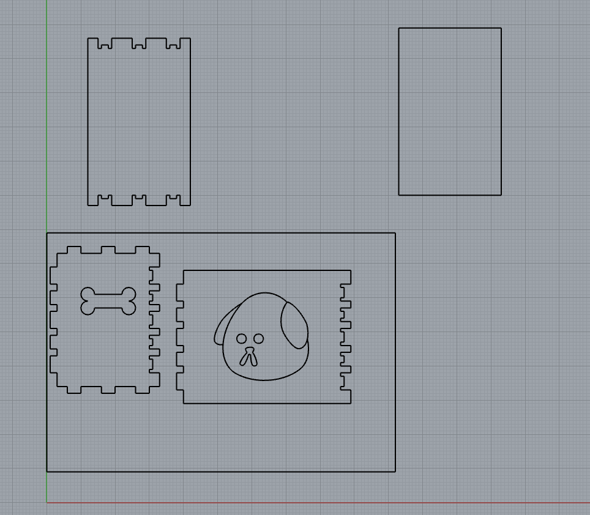
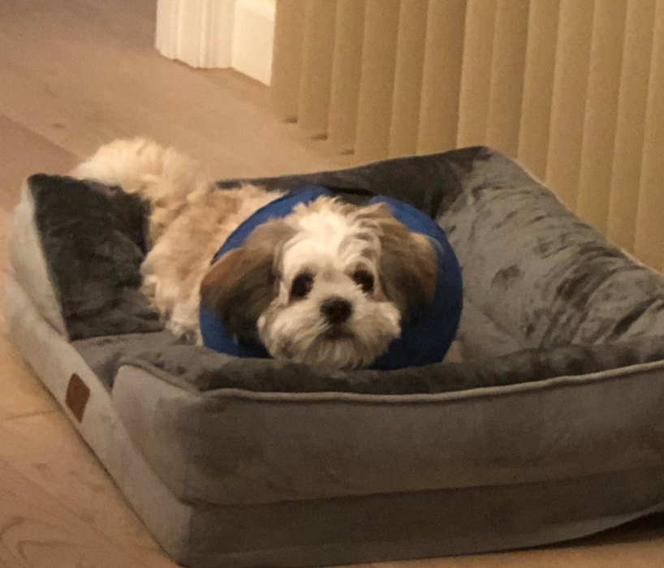
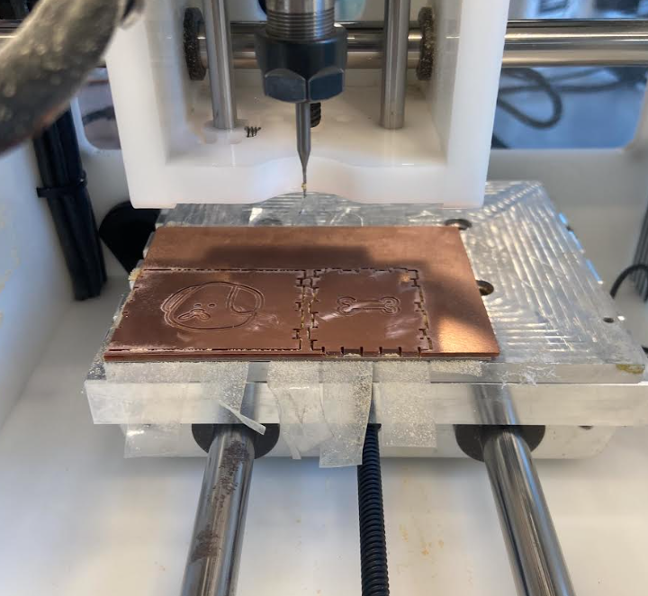
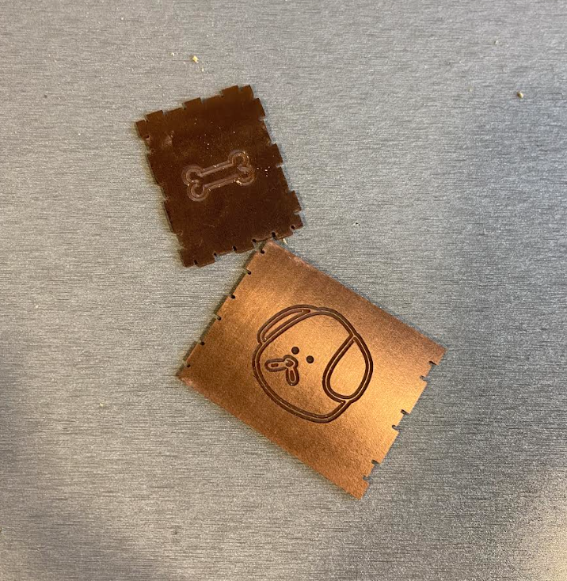
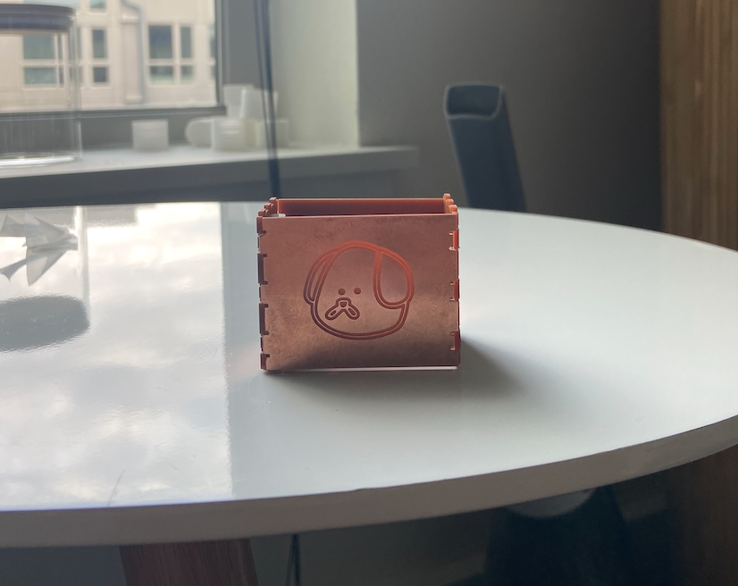

For this assignment, I wanted to try out the CNC Mill to learn something new. After lecture, we headed to the MILL to try them out and we managed to get a test cut in! It was pretty fast.
My first step was researching boxes and types of box joints online. I saw some really cool boxes, and I wanted to try out dovetail joints initially but I realized those joints were suited for thicker material. The FR1 boards were about 1.4mm thick, so I decided simple finger joints would be the route. Then I used Rhino to create the sides and joints of my box and a dog and bone design.
|

|

|
I created my Rhino design based on the size of the FR1 boards, ensuring that I would have enough board space of the sizes of my box walls. I decided on engraving a dog and bone because I love dogs, and they matched the dogbones concept. I also loosely based my dog design on my friend's dog, Cho Cho. I also made sure to differentiate my cuts from my engravings with different colors and layers in Rhino.
While finalizing my designs, I had to make sure my dog bones were on both pieces of adjacent joints. Initially I didn't have my dogbones on the protruding sides, but I put them in.
After I exported my Rhino files as DXFs, I imported my cut file to KiCAD, and they looked good. However, when I imported my engraving file, something went wrong. I got a weird error saying "Invalid Bezier Curve", and my dog didn't even show up properly.
My bone was fine though. After some time, I figured out the shapes wouldn't show properly in KiCAD if I used the circle tool in Rhino and manipulated the shape into an ellipse or something organic, so I redrew my dog using the curve tool instead, and the engraving imported properly in KiCAD this time.
This portion was straightforward, thanks to Junchao's slide deck. I created my two Gerber files-- one for cutting and the other for engraving.
I was ready to start using the mill so a few friends and I went to the MILL together for moral support and for safety. We plugged in the machine, put in the end bit, set the Z offset, and taped on the sacrificial layer.
I taped my board on for the cut, and I was a bit nervous at first because I only had 2 FR1 boards and I didn't want to mess up (shoutout to Jody for letting me use her extra boards later!)
I made sure to measure the sacrificial layer and my cut layer before cutting so I could input the right dimensions into Bantam, ensuring the mill would cut and engrave at the right depth. Each layer was about 1.4mm.
After double checking all the settings, I pressed "Mill All" and my god the sound that the mill makes from spinning at such a high speed was terrifying. I put my hand on the emergency stop button whenever mill was cutting, just in case something went wrong. Nothing went wrong though!
My first round cuts and engravings went smoothly, so I was really happy about it. I cut another round for my other sides.
|

|

|
However, things went wrong with my top and bottom sides. They cut too small, and the machine engraving some parts of it. I didn't have any engravings and Junchao and I couldn't figure out how to fix this error. At this point, I spent 5 hours at the MILL and was too tired to fix it, so I stuck with the sides of my box.
While putting my pieces together, I had to sand the joints because I didn't size the protruding pieces down in Rhino. I knew about this but I didn't want to change my file again.
Some of the joints were hard to put together even after I sanded it, but I still managed to put the sides together even though 2 sides were not a snug fit. Next time, I need to make my joints a bit deeper for a tigher fit.
|
|

|
Shoutout to Vanessa Chien Lai, Petrina Chan, and Jody Laflen for the support throughout this assignment.